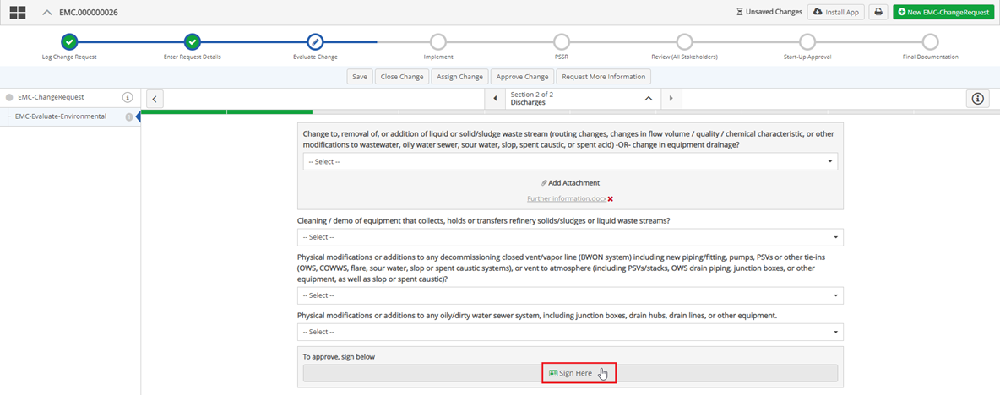
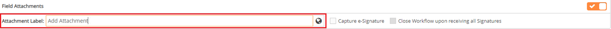
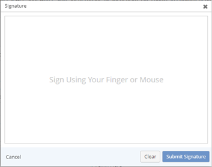
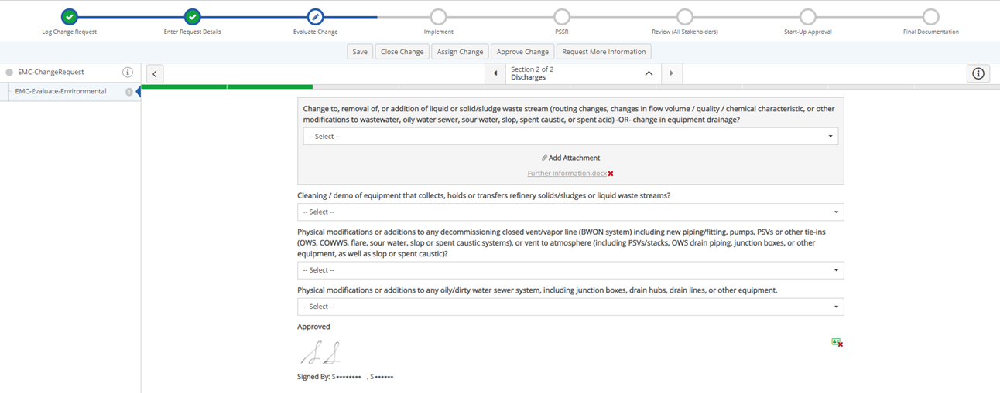
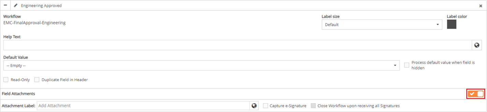
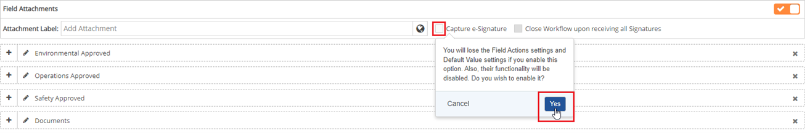

In a workflow, the approval process for a document can simply be clicking an approval checkbox, however there are some documents that require an electronic signature for the approval process of a form submission. The approval checkbox on forms can be changed to an e-signature field.
Add an E-signature to a form
Navigate to a field on a form with the E-signature option provided.
In the approval field, click Sign Here.


Once the Signature window appears, there are two options for signing:
On a desktop/laptop sign using your mouse.
On a touch screen sign using your finger.

Once signed, click Submit Signature. The signature is captured and displayed on the form.

Add the E-signature feature to a form field:
From the main menu dropdown, select Select Designer to open Forms Designer.
To select a specific workglow step, select a Form Type, and then select the desired Workflow Step.
Click the Fields ribbon.
The Fields ribbon expands with a menu of Field types below it, and two sections display to the right: Header Fields, and Field Sections.
Under the Field Sections, click the +icon in front of the desired field to expand the field.
The field must be a Boolean field to add the e-signature control.
To the right of the Field Attachments section, turn on the Field Attachments toggle. The Field Attachments section expands, displaying the Attachment Label: field.

By default, the Attachment Label: Field is filled in as Add Attachment. To change the name of the field, click the Attachment Label: field and type a field name. This will display as the signature field in the form.
Click the checkbox in front of Capture e-Signature (Boolean field). A popup display saying if you select this option, Field actions will be disabled.

An e-signature can be applied to any Boolean field.